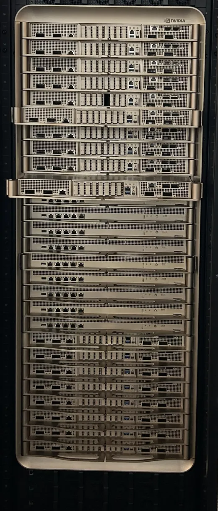
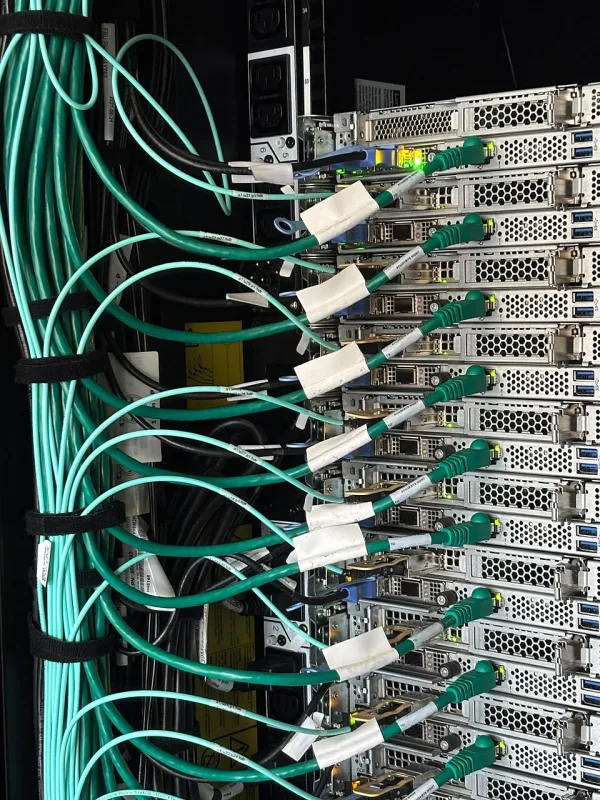
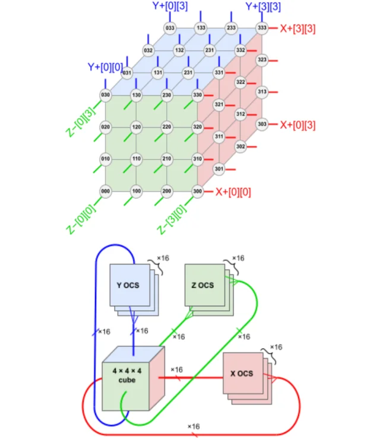

Every message costs a fixed latency plus its bytes over the link's bandwidth, and the links form a ladder in which each rung reaches more chips and is roughly ten times slower than the one above, so each kind of parallelism belongs on the slowest rung whose bandwidth its traffic per FLOP can afford.
One cluster, five rungs: each reaches more GPUs and is slower than the one above. Fig. 1 climbs them on two servers of 8 GPUs, from a GPU's own memory to the spine of the network. Every pipe's cross-section is drawn in proportion to its bandwidth per GPU, each direction, so a pipe with a tenth of the area carries a tenth of the bytes; dots stream where the data moves.
Two servers of a cluster are drawn, with their 8 rail leaves; the four spine switches stand for however many a cluster has (illustrative).
Running example. As on the parent Topic: hardware: one training step of Llama 3.1 8B, whose bf16 gradients are 16.06 GB derived: 8.03 B parameters × 2 bytes. The parent's section 6 gives the intuition and its Performance calculator the bandwidth-only arithmetic; this page owns the links, the topologies and the collective algorithms.
You need the parent's roofline (the ridge point returns in section 9 as link intensity) and the parallelism forms from Distributed Training (what DP, FSDP, TP, PP and EP hold and send).
Bandwidth per GPU, each direction, H100 generation unless named. HBM: 3.35 TB/s (H100 page). NVLink 4: "900 GB/sec total" per H100 over 18 links (Hopper in depth), 450 each way; NVLink 5 on Blackwell 1.8 TB/s total (NVLink page). PCIe 5.0 x16: 63 GB/s each way (32 GT/s per lane, 128b/130b encoding). One 400 Gb/s NIC per GPU: an AWS p5 server has 3,200 Gb/s for its 8 H100s (AWS P5). vendor spec
Before any byte moves, software posts the request, the hardware sets up the transfer, the first bits travel and the receiver notices they arrived. That fixed cost is paid per message, whatever its size. The standard model, used by MPI and NCCL designers alike (the alpha-beta or Hockney model), charges a message of m bytes
The half-bandwidth size n½ = α × β is where a message spends as long starting as flowing, so it reaches half the link's bandwidth (the dots on the curves). NVLink's n½ is about 1.5 MB. This is why PyTorch's DistributedDataParallel groups gradients into buckets (25 MiB by default), why NCCL switches algorithms by message size (section 7), and why a tensor-parallel all-reduce of one decoded token (8 KB for a 4,096-wide model) is latency-bound on any link.
α for NVLink, InfiniBand and RoCE: 64-byte end-to-end latencies DeepSeek measured on its H800 cluster (Zhao et al. 2025, Table 5) independent. The laptop row is measured here: two processes exchanging messages through PyTorch's Gloo library over the loopback network (section 7). Rows marked "assumed" have no published latency I could find.
Per direction, always. Vendors usually print both directions added: "900 GB/s" for NVLink 4 is 450 each way, "1.8 TB/s" for NVLink 5 is 900, the "128 GB/s" AMD prints for PCIe 5.0 x16 (MI300X data sheet) is 64 before encoding. Network speeds are bits per second per direction: 400 Gb/s is 50 GB/s each way. This page uses per direction throughout, because an all-reduce sends and receives at once.
A GPU is a card in a computer: the CPU sends it work, the NIC reaches its memory, and GPUs without NVLink reach each other, all over PCI Express. A link is a bundle of lanes, each two pairs of wires, one per direction; a GPU slot has 16 ("x16"). Each generation doubled the rate per lane (rung 3 in the hero figure).
| Version | Year | GT/s per lane | Encoding | x16, GB/s each way | Where you meet it |
|---|---|---|---|---|---|
| 3.0 | 2010 | 8 | 128b/130b | 15.8 | older servers |
| 4.0 | 2017 | 16 | 128b/130b | 31.5 | A100 ("PCIe Gen4 64 GB/s" both ways, A100 page); RTX 3090 and 4090 |
| 5.0 | 2019 | 32 | 128b/130b | 63.0 | H100, MI300X, RTX 5090, ConnectX-7 NICs |
| 6.0 | 2022 | 64 | PAM4, 242B/256B FLIT | 121 | Blackwell Ultra ("PCIe Gen6 256 GB/s", NVIDIA); ConnectX-8 |
| 7.0 | 2025 | 128 | PAM4, FLIT | 242 | specification released; no products yet |
Per direction after encoding derived: GT/s × 16 × 128/130 / 8; 242/256 for FLIT. Provenance in the closed block below. vendor spec
What sits on it in a GPU server. In an 8-GPU HGX server the GPUs, their NICs and NVMe drives hang off PCIe switches that connect to the two CPUs. Peer-to-peer lets one GPU read another's memory over PCIe without staging through CPU memory. GPUDirect RDMA lets a NIC read and write GPU memory directly, so gradients leave the server without a copy into CPU memory; it works best when the NIC and GPU share a PCIe switch, which is why HGX boards pair each GPU with its own NIC. PCIe can still be the limit: ConnectX-8 NICs and Blackwell GPUs speak PCIe 6.0, enough for 800 Gb/s, "However, Grace CPUs currently only support PCIe Gen5, which limits throughput to 400 Gb/s" when traffic goes through the CPU (NCCL 2.27 blog).
Consumer cards. GeForce cards from the RTX 4090 on have no NVLink, so two RTX 5090s talk over PCIe 5.0: 63 GB/s each way, about a seventh of an H100's NVLink. The 8B's gradient all-reduce between two such cards takes about 255 ms derived: 16.06 GB / 63 GB/s, ring with n = 2.
Data on the wire is wrapped in an encoding that costs a little: 8b/10b (20% overhead) until 2.0, 128b/130b (1.5%) from 3.0, and from 6.0 a new scheme with four voltage levels per symbol (PAM4) and fixed-size packets (FLITs) with error correction, carrying 242 useful bytes in every 256.
Rates, encodings and the PCI-SIG totals ("up to 256.0 GB/s via a x16 configuration" for 6.0, "bidirectional"; 7.0 "officially released to PCI-SIG members ... on June 11, 2025"; 3.0 released November 17, 2010) from PCI-SIG's FAQ, 6.0 and 7.0 pages, read through Wayback Machine copies because pcisig.com refuses automated fetching. PCI-SIG's figures are both directions before encoding (64, 128, 256 GB/s for x16 Gen 4, 5, 6). Years other than 3.0 and 7.0 from Wikipedia (secondary). PCIe 8.0 targets 256 GT/s "by 2028".
Tensor parallelism exchanges activations several times per layer, so GPUs splitting one model need bandwidth near their memory's, far beyond PCIe. NVLink is NVIDIA's GPU-to-GPU link: many lanes of fast serial wires, grouped into links. Since the A100 the links go not to other GPUs but to NVSwitch chips, so any GPU can send to any other at its full NVLink bandwidth, all at once. The GPUs joined this way are the NVLink domain (or scale-up domain); inside it GPUs can load and store each other's memory, like one bigger GPU with slower remote memory.
A switch gives every pair the whole port; a mesh gives each pair one link. Fig. 2 opens one 8-GPU server and compares the two ways to join its GPUs, then shows what a switch can do that a mesh cannot.
Values each way unless marked. The NICs, PCIe switches and CPUs are placed as in section 2's description; their number of PCIe switches is illustrative. vendor spec
SemiAnalysis attributes NVIDIA's lead in their single-node collective tests to exactly this, "450GByte/s NVLink switched topology with in-network reduction (NVLS), compared to MI300X's 7x64GByte/s xGMI point-to-point topology" (SemiAnalysis, Dec 2024) independent.
In-switch reduction (NVLink SHARP). Third-generation NVSwitch (Hopper) and later can add numbers inside the switch: GPUs send their data in, the switch sums it and multicasts the result back. NVIDIA: "In-fabric multicast and reductions provide up to 2x throughput gain while significantly reducing latency for small block size collectives" (Hopper in depth). NCCL calls the algorithm NVLS (since version 2.17, NCCL environment variables). Section 7 shows why the gain is close to 2 in bytes and why measurements give less.
| Generation | GPU | Links | Per GPU, total | Each way | Domain |
|---|---|---|---|---|---|
| NVLink 2 | V100 | 6 | 300 GB/s | 150 | not covered here |
| NVLink 3 | A100 | 12 | 600 GB/s | 300 | 8 per HGX board |
| NVLink 4 | H100, H200 | 18 | 900 GB/s | 450 | 8 per HGX board (4 NVSwitch chips); up to 256 with the NVLink Switch System |
| NVLink 5 | B200, B300, GB200 | 18 | 1,800 GB/s | 900 | 8 (HGX) or 72 (NVL72 rack) |
| NVLink 6 | Rubin | 36 | 3,000 or 3,600 GB/s | 1,500 or 1,800 | 72 (Vera Rubin NVL72) |
Ampere in depth (12 links, 600 GB/s; V100 6 links, 300 GB/s); Hopper in depth (18 links, "25 GB/sec effective bandwidth in each direction" per link, NVLink Switch System "up to 256 GPUs"); NVLink and NVSwitch for inference, Aug 2024 ("four third-generation NVSwitch chips" per HGX H100/H200); NVLink page. NVLink 6: NVIDIA's NVLink and Vera Rubin NVL72 pages say 3,000 GB/s over 36 links and 216 TB/s per rack; the Rubin platform blog (Jan 2026) and the HGX page say 3.6 TB/s and 260 TB/s. Both shown; the Chip atlas on the parent page uses 3.6. vendor spec
The NVL72 rack. GB200 NVL72 puts 72 Blackwell GPUs (and 36 Grace CPUs) in one NVLink domain. Nine switch trays, each with two NVLink switch chips of 72 ports, connect all 18 links of every GPU: "Each NVLink switch tray delivers 144 NVLink ports at 100 GB so the nine switches fully connect each of the 18 NVLink ports on every one of the 72 Blackwell GPUs", through "a copper cable cartridge" rather than optics; 72 × 1.8 TB/s gives the 130 TB/s headline (GB200 NVL72 blog, DGX GB200 user guide). Tensor or expert parallelism of up to 72 instead of 8 now runs at NVLink speed.
Google's TPUs join chips directly in a torus over ICI, without switches (section 6). NVLink-C2C joins a Grace CPU to its GPUs at 900 GB/s (GB200 NVL72 blog). UALink is an open scale-up standard: its 1.0 specification defines 200 Gb/s lanes, 800 Gb/s per four-lane station and "up to 1024 endpoints" with load/store semantics (UALink Consortium, May 2025); AMD's Helios rack carries it over Ethernet (parent page, Chip atlas).

Past the NVLink domain, GPUs in different servers talk through NICs. The ordinary way, a program calling the operating system's TCP stack, copies every byte through kernel memory, takes interrupts and backs off on loss; at 400 Gb/s per GPU that costs CPU time and microseconds the GPUs spend idle (Networking foundations explains TCP, and its section 14 why clusters avoid it for heavy traffic). Remote direct memory access (RDMA) moves the whole transport into the NIC. Fig. 3 steps through it against the TCP path:
The same RDMA operations run on three kinds of fabric: InfiniBand, RoCE (RDMA over Converged Ethernet: the InfiniBand transport inside UDP packets, port 4791, on ordinary routed Ethernet) and AWS's EFA (its own SRD protocol); each is described in the closed block below, and how NCCL picks between them, or falls back to TCP sockets, is on Networking foundations, section 14. What separates InfiniBand from RoCE is how each avoids dropping packets, because RDMA's hardware transport recovers from a lost packet slowly. Meta trained Llama 3 405B over RoCE at 400 Gb/s per GPU (closed block below).
InfiniBand is a separate network built for RDMA, with its own adapters and switches (InfiniBand Trade Association). RoCEv2 carries the same RDMA operations in UDP datagrams to port 4791 over ordinary routed Ethernet and IP (IANA registered 4791/udp to the InfiniBand Trade Association in 2014, IANA port registry); the UDP header is only an envelope, and reliability lives in the RDMA transport and the fabric. AWS EFA is an OS-bypass interface whose transport is the Scalable Reliable Datagram (SRD) protocol, with built-in congestion control, reached through Libfabric, which ML applications use through NCCL and NIXL (EFA documentation).
InfiniBand: credits. "Each receiving end of a link supplies credits to the sending device ... Data is not transmitted unless the receiver advertises credits indicating receive buffer space is available" (Mellanox, Introduction to InfiniBand). So the fabric never drops for lack of buffer. Current NVIDIA switches add adaptive routing and in-network reduction (SHARP). vendor
RoCE: lossless Ethernet by configuration. Ethernet drops packets when buffers fill; RoCE needs Priority Flow Control (PFC), pause frames sent hop by hop, plus ECN marking and a congestion-control algorithm, usually DCQCN. The Ultra Ethernet Consortium names the costs: DCQCN "requires careful manual tuning", a lost packet triggers "Go-Back-N" retransmission, and PFC backpressure "can produce 'congestion trees' and head-of-line blocking" (UEC overview, 2023). In exchange it is multi-vendor and runs on the Ethernet a data centre already has.
In-network reduction (SHARP). NVIDIA's InfiniBand switches can do the additions of an all-reduce themselves (SHARPv3 on Quantum-2, SHARP v4 on Quantum-X800), so data "traversing the network" shrinks as it climbs a reduction tree (NVIDIA SHARP docs). SemiAnalysis measured the effect: without SHARP the all-reduce slows as GPUs are added, "In contrast, with SHARP, the speed/completion time stays the same. We have results for up to 1,024 H100s" (SemiAnalysis, Dec 2024) independent.

RoCE at scale, in a real run. Meta trained Llama 3 405B over RoCE at 400 Gb/s per GPU (smaller models on InfiniBand). "LLM training produces fat network flows that are hard to balance across all available network paths using traditional methods such as Equal-Cost Multi-Path (ECMP) routing", so "our collective library creates 16 network flows between two GPUs, instead of just one" and an enhanced ECMP hashes on more header fields; with that balancing and "Deep-buffer switches in the spine", they ran "without traditional congestion control methods such as ... (DCQCN)" (Llama 3 report, section 3.3.1). ECMP sends every packet of one flow down one path to keep order, so a few huge flows collide on some links while others sit idle; more flows per connection spread them.
| Part | Speed | Notes |
|---|---|---|
| ConnectX-7 NIC | 400 Gb/s | InfiniBand NDR or Ethernet; one per GPU in DGX H100 ("8 x ... ConnectX-7 ... Up to 400Gbps", DGX H100 guide) |
| ConnectX-8 SuperNIC | 800 Gb/s | PCIe 6.0 (SuperNIC page) |
| ConnectX-9 SuperNIC | 1.6 Tb/s | "per GPU", Rubin generation (same page) |
| Quantum-2 switch | 64 ports of 400 Gb/s | "51.2 terabits per second (Tb/s) of bidirectional throughput", SHARPv3 (Quantum-2) |
| Quantum-X800 switch | 144 ports of 800 Gb/s | SHARP v4, adaptive routing (Quantum-X800) |
| Spectrum-6 Ethernet switch chip | 102.4 Tb/s | 200G SerDes (Spectrum-X) |
Per GPU this is 50 GB/s each way at 400 Gb/s, 100 at 800 Gb/s. Server totals vary by builder: NVIDIA's HGX B200 reference lists 0.8 TB/s of networking per 8 GPUs and HGX B300 1.6 TB/s (HGX); AWS's P6-B200 has 3.2 Tb/s and P6-B300 6.4 Tb/s, half of those (AWS P6). vendor spec
Where Ethernet is going. The Ultra Ethernet Consortium released its Specification 1.0 on June 11, 2025 (UEC press release). Its design goals, from the overview: "packet spraying" (every flow uses all paths at once), delivery out of order into the application buffer, and a transport that "does not depend on a lossless fabric". NVIDIA's Spectrum-X sells adaptive routing and telemetry-based congestion control on Ethernet (Spectrum-X, vendor claims). AWS's SRD already sprays and tolerates reordering (its user guide: "built-in OS-bypass and congestion control through the Scalable Reliable Datagram (SRD) protocol", EFA).
A switch has a fixed number of ports (64 on a Quantum-2), so thousands of NICs need layers of switches, each costing money, power and a hop of latency. How they are wired decides which GPUs can talk at full speed at once. Three shapes cover almost every machine:
Fat trees. The standard GPU-cluster answer is a folded Clos network, usually called a fat tree: leaf switches connect to NICs below and to every spine switch above; a third layer joins groups of spines when two are not enough. With k-port switches, two layers reach k²/2 endpoints and three reach k³/4 (Al-Fares et al., SIGCOMM 2008); with 64 ports that is 2,048 and 65,536 derived. If each leaf has as many uplinks as downlinks, the network has full bisection bandwidth: cut it into any two halves and each half can send to the other at the full rate of its NICs. Fewer uplinks than downlinks is oversubscription: at 1:7 (Meta) or 15:1 (Alibaba), traffic crossing that layer gets a seventh or a fifteenth of the NIC rate if everyone sends at once.
Dragonflies. "Because cables dominate network cost, the number of cables, and particularly the number of long, global cables should be minimized". The dragonfly answer "uses a group of high-radix routers as a virtual router to increase the effective radix of the network", so that "each minimally routed packet traverses at most one global channel"; the authors claim it "reduces cost by 20% compared to a flattened butterfly and by 52% compared to a folded Clos network in configurations with ≥ 16K nodes" (Kim, Dally, Scott and Abts, ISCA 2008). Inside a group the switches are wired all-to-all with short cables; between groups there is at least one long global link per pair (the Dragonfly view of the figure). The price is that heavy traffic between two groups shares few global links, so the paper adds adaptive routing that sends some packets through a third group. HPC machines such as Frontier use it; the AI training clusters in the table use rail-optimised or multi-plane fat trees, whose rails suit NCCL's same-index rings.
Rails. In a rail-optimised fabric, GPU k of every server connects to leaf switch k: rail k (rung 4 of the hero figure). NCCL's collectives across servers mostly pair same-index GPUs (the NVLink inside the server does the rest), so their traffic stays on one leaf, one hop, never touching the spine. NVIDIA's DGX SuperPOD reference: "Traffic per rail of the DGX B200 systems is always one hop away from the other 31 nodes in a SU. Traffic between nodes, or between rails, traverses the spine layer" (network fabrics). Real clusters (Meta, Alibaba, DeepSeek, NVIDIA, Frontier) are in the closed block below.
| Cluster | Shape | Oversubscription | Source |
|---|---|---|---|
| Meta, Llama 3 (24K GPUs, RoCE) | Three-layer Clos. 16 GPUs (two servers) per rack and ToR; 192 racks form a pod of 3,072 GPUs; 8 pods form the cluster | None inside a pod ("full bisection bandwidth"); 1:7 between pods | Llama 3, 3.3.1 |
| Alibaba HPN (15K GPUs per pod) | Two tiers, rail-optimised, each NIC's two ports on two different ToRs ("dual-ToR"), two planes; 1,024 GPUs per single-layer segment | 1:1 in the pod; 15:1 above it | Qian et al., SIGCOMM 2024 |
| DeepSeek (2,048 H800s) | Multi-plane fat tree: GPU-NIC pair k of every server on its own two-layer plane; 8 planes of 64-port switches reach 16,384 GPUs | 1:1 | Zhao et al., ISCA 2025 |
| NVIDIA DGX SuperPOD (B200, 4 SUs) | Rail-optimised two-tier fat tree: "A modular architecture based on SUs of 32 DGX B200 systems each", "rail-optimized, balanced, full-fat tree" (components); four units, 127 servers, use 32 leaf and 16 spine switches | 1:1 | SuperPOD RA |
| Frontier (HPE Slingshot) | Dragonfly; 64-port, 12.8 Tb/s switches; "copper and optical cables" | not stated | OLCF, Frontier system architecture, Feb 2023 |
Why oversubscribe at all? Alibaba reports that "about 96.3% of in-production LLM training jobs take less than 1K GPUs", so a full-bisection core would mostly carry nothing; HPN places pipeline traffic, the lightest, across pods. DeepSeek's cost table prices a two-layer fat tree at $4.39k per endpoint against $7.5k for three layers, which is why it built eight two-layer planes instead of one three-layer tree (Zhao et al., Table 3). The rail-only proposal goes further and removes the spine, forwarding cross-rail traffic over NVLink, claiming "the same training performance while reducing the network cost by 38% to 77%" with "8.2% to 11.2% completion time overhead for all-to-all traffic" (Wang et al. 2023).
Servers of 8 GPUs, each GPU with one 400 Gb/s NIC (50 GB/s each way) and NVLink 4 (450 GB/s each way) inside its server; each GPU sends 1 GB. The drawing shows the first few servers; the numbers are for the whole cluster. Start with all-to-all at 1:1, raise the oversubscription, then tick PXN.
Fluid model (src/fabric.py, mirrored here and checked on 216 cases): perfect load balance across spine switches, no congestion control or flow collisions (real ECMP hashing does worse), all GPUs sending at once. Time = the largest load / capacity over link classes. Switch ports count leaf downlinks plus leaf uplinks and the spine ports they need, a rough cost proxy. derived
Each TPU has its own inter-chip interconnect (ICI) ports wired straight to neighbouring chips: no NIC, no switch. Chips sit on a grid; each talks to 4 neighbours (a 2-D grid: v2, v3, v5e, v6e) or 6 (a 3-D grid: v4, v5p, Ironwood). Wiring the last chip of every row back to the first makes a torus (the Torus view in section 5's figure), which roughly halves the longest path and lets a ring of chips send both ways at once. A torus is excellent for ring collectives between neighbours and slower for arbitrary point-to-point traffic, which is why TPU programs are written as shardings over a device mesh (Sharding and scale).
Optical circuit switches. A torus wired once is fragile: one dead chip breaks a ring, and the whole machine must be cabled before any of it can be used. TPU v4 builds the pod from 4 × 4 × 4 cubes of 64 chips (one rack, 16 hosts), electrically wired inside, and connects the cubes' faces through optical circuit switches (OCS): MEMS mirrors that steer light from one fibre to another and switch in milliseconds. Each cube face has 16 links, 96 per cube; opposite faces go to the same switch, so 6 × 16 / 2 = 48 switches of 136 ports join 64 cubes into 4,096 chips. The mirrors are not a packet network: they only set which cube's face is plugged into which, like a plugboard: slices of any shape, routing around failed cubes, twisted tori, for under 5% of system cost.
All from the TPU v4 paper:
Slices smaller than a cube get no optical wraparound, so a 2 × 2 × 4 slice is slower per byte than a 4 × 4 × 4. Ironwood keeps the scheme at 9,216 chips: 144 cubes of 64, 1.77 PB of HBM in one pod, ICI at 9.6 Tb/s (1.2 TB/s) per chip (Google Cloud, Nov 6 2025). Per link the scaling book uses 45 GB/s one way on v4 and v5e and 90 GB/s on v5p, v6e and TPU7x (scaling book). vendor spec
Beyond a pod. Pods (or slices) join over the ordinary data-centre network, DCN, at about 6.25 GB/s per chip (12.5 on v6e and TPU7x), more than 10 times slower than one ICI link (scaling book). So, as on GPUs, only data parallelism (the gradient all-reduce, once per step) crosses that boundary ("multislice"), and everything chatty stays on ICI: the same ladder, with ICI as the top network rung. Section 7 gives the collective times on a torus; the chip itself is on TPUs and other accelerators.

Training code calls a handful of collectives, operations every GPU in a group joins: all-reduce (everyone ends with the sum), reduce-scatter (everyone ends with the sum of one slice), all-gather (everyone ends with every slice), all-to-all (everyone sends a different piece to everyone). Distributed Training explains which parallelism calls which. A library (NCCL on NVIDIA, RCCL on AMD, XLA on TPU) turns each call into a schedule of point-to-point messages, and the schedule decides how many latencies and how many bytes the operation pays. Fig. 4 runs four schedules on the same input; pick one with the first row of buttons.
8 GPUs, each buffer cut into 8 chunks; a chunk's shade shows how many GPUs' contributions it holds (pale: its own; full: all 8). Predict, then step: at 16.06 GB, which schedule sends the most bytes per GPU, and which ties with the ring? Then pick 8 KB: there the step count is everything, and recursive doubling's 3 steps beat the ring's 14.
With n GPUs, a buffer of S bytes, and every GPU able to send and receive one message per step:
| Algorithm | Steps (latencies) | Bytes sent per GPU | Time, alpha-beta | Good for |
|---|---|---|---|---|
| Ring: pass chunks of S/n around a ring, adding (n−1 steps), then pass the finished sums (n−1 steps) | 2(n−1) | 2(n−1)/n · S | 2(n−1)α + 2(n−1)/n · S/β | large buffers; the minimum bytes of any point-to-point scheme |
| Recursive doubling: swap the whole buffer with the partner at distance 1, 2, 4, ... | log₂ n | log₂ n · S | log₂n (α + S/β) | tiny buffers |
| Halving-doubling (Rabenseifner): swap halves of a shrinking range, then grow it back | 2 log₂ n | 2(n−1)/n · S | 2 log₂n α + 2(n−1)/n · S/β | both, when n is a power of 2 |
| Double binary tree (NCCL across nodes): two pipelined trees, each carrying half | about 2 log₂ n | about 2S | about 2 log₂n α + 2S/β | many nodes, small and medium buffers |
| In-switch (NVLink SHARP, InfiniBand SHARP): everyone sends to the switch, which adds and sends back | 2 | S | 2α + S/β (up and down streams overlap) | everything, if the switch can add at line rate |
Formulas: Thakur, Rabenseifner and Gropp, 2005 for recursive doubling and halving-doubling; the ring line is their ring reduce-scatter plus ring all-gather, composed here derived. Their γ term for the additions is dropped: on GPUs the adds are far cheaper than the transfers. The tree row is the usual α-β estimate derived; NVIDIA: rings' "latency scales linearly with the number of GPUs", trees give "full bandwidth and a logarithmic latency", "up to 180x improvement at 24k GPUs" in latency (NCCL 2.4 blog, 2019). The in-switch line is idealised (the switch adds as fast as data arrives).
On a TPU slice the ring runs along a torus axis in both directions at once, and a collective over two mesh axes uses both, halving the bandwidth term; a tree trades the ring's n/2 latencies for 2 log2 n. The formulas are in the closed block.
For the 8B's 16.06 GB along one 16-chip v5p axis the ring form gives about 2 × 16.06 GB / 180 GB/s = 0.178 s, 0.059 s over all three axes derived, against 62.5 ms over 8 H100s' NVLink. The book's own statements, and a worked example checked against a profile, are in the closed block.
The scaling book's forms, with Wbidi one link's two-way bandwidth and α about 1 µs per ICI hop ("This is typically around 1us", scaling book, part 3, 2025-02-04):
| Algorithm | All-gather of V bytes over n devices | All-reduce | Where it is used |
|---|---|---|---|
| Ring (1-D, both directions, wraparound) | max(α·n/2, V / Wbidi) | twice the all-gather (reduce-scatter, then all-gather) | One axis of a TPU torus; NCCL rings inside a server |
| 2-D torus (X × Y, gather over both axes) | max(α·(X+Y)/2, V / (2 Wbidi)) | twice that | A collective over two mesh axes of a slice; the 2-D all-reduce of Ying et al. 2018 on TPU v3 pods |
| Tree (double binary tree) | not used for gathers | about 2·log2(n)·α + 2V/W | NCCL across many nodes |
A bidirectional ring all-gather takes "Ttotal = V / Wici", which "doesn't depend on X!", gathering over several axes "increases the available bandwidth by a factor of Naxes", "an AllReduce is twice as expensive as an AllGather", an all-to-all on a 1-D ring is "1/4 the cost of an AllGather", and an axis without the wraparound "typically doubles the time of most communication" (scaling book, sharding). The book's worked example, an all-gather of 34 MB over a 4-chip v5e axis, predicts 378 µs with a wraparound and 560 µs without one; the profile it shows measured 680 µs measured by Google.
Predict, then drag: at 1,024 devices, which loses for a 100 KB message, the ring or the tree? For small messages latency dominates and a ring over many devices loses; for large ones bandwidth dominates and the ring's latency is irrelevant.
Against published nccl-tests runs, rings reach 76 to 81% of NVLink's per-direction rate, and in-switch reduction is real but well short of its ideal: 1.29 times the ring on H200 and 1.23 times on B200, not 1.75 times. The table, its model and what nccl-tests' busbw means are in the closed block.
NVIDIA's nccl-tests, the standard benchmark, prints two bandwidths: algbw = S / t, and busbw = algbw × 2(n−1)/n for all-reduce ((n−1)/n for all-gather, reduce-scatter and all-to-all), defined so that it can be compared "with the hardware peak bandwidth, independently of the number of ranks used" (nccl-tests PERFORMANCE.md). For a ring, busbw is the bandwidth on each wire. In-switch and hierarchical algorithms break that meaning; NCCL's author: "with SHARP enabled ... BusBW may not represent any 'Bus' bandwidth" (nccl-tests issue 153). So a busbw above the link's rate is not a measurement error: it is NVLS or a hierarchy at work.
Model: ring busbw equals the link's bandwidth each way; in-switch busbw = 1.75 × link (S/β time, rescaled by 2(n−1)/n); across servers a two-level model (ring inside over NVLink, each GPU's 1/8 share all-reduced over its own NIC, the slower phase setting the time) derived. Measurements: Bekman, ML Engineering, network benchmarks independent; AWS awsome-distributed-training sample outputs vendor. Together AI's acceptance target for H100 InfiniBand clusters is "around 92% of the theoretical maximum of the fabric: so around 370 GB/s on a 400GB/s fabric" (Together AI, Aug 2024).
Rings reach 76 to 81% of NVLink's per-direction rate, and two-level all-reduces across servers 73 to 101% of the model. In-switch reduction is real but well short of the ideal: 1.29 times the ring on H200 and 1.23 times on B200, not the 1.75 times that halving the bytes would give, because the switch's adders and protocol overheads, not the wires, become the limit. The 2 × p5 case reaches 101% of a model that assumes a ring inside each server, which fits NCCL using NVLS there (the README does not say).
How NCCL picks. NCCL chooses algorithm (ring, tree, NVLS, CollNet, PAT) and protocol by message size and topology from a cost model: logarithmic-latency schemes for small messages, bandwidth-optimal ones for large. NVIDIA's tuning post prints a real choice on 4 servers, 32 GPUs: tree with LL up to 96 KiB, tree with LL128 up to 12 MiB, ring with LL128 up to 96 MiB, ring with Simple above (NVIDIA, Jul 2025).
The protocols trade latency against bandwidth: LL sends 4 bytes of data with a 4-byte flag (about 1 µs per hop, 25 to 50% of peak bandwidth), LL128 120 bytes of data with an 8-byte flag (about 2 µs, about 95%), Simple large chunks with memory fences (about 6 µs, near peak) (Hu et al., Demystifying NCCL, Table I) independent.
Both algorithms written with send and receive in PyTorch, run as 2, 4 and 8 processes on this laptop over loopback TCP. At small sizes the ring takes as long as recursive doubling with 8 ranks; the model's step count predicts 14/3 = 4.67. The predicted crossover is , and the measured crossover falls between the 1 MiB and 4 MiB sizes for 4 and 8 ranks.
measured here Apple M1 Pro (8 performance and 2 efficiency cores), PyTorch 2.14.1, Gloo backend, three runs 20 s apart, median shown with the min-max range; load average 5.5 to 7.2 (the machine was shared with other jobs). The "links" are slow (about 80 µs per message) and share one memory system; every result was checked against the exact sum. Lines: the alpha-beta model with α fitted from sizes up to 16 KiB (both algorithms pooled, time divided by steps) and β from the ring at 16 MiB derived. Gloo's own all-reduce (grey) is shown for reference; its algorithm choice was not inspected. Script: src/meas/coll_bench.py.
Two departures teach as much as the agreement. The per-step latency grows with the number of ranks (), because the processes compete for cores. And the bandwidth per rank falls as ranks are added () while the total stays near : all the "links" share one memory system, exactly like GPUs whose NICs share an oversubscribed switch. The model assumes independent links; a real fabric only gives you that if it was built with full bisection.
A mixture-of-experts layer sends each token to a few of many experts, which live on different GPUs (expert parallelism). Every MoE layer does two all-to-alls going forward (dispatch tokens to experts, combine the results) and two going back. In bytes an all-to-all looks cheap: each GPU sends (n−1)/n of its buffer, once. But every GPU talks to every other at once, so its traffic crosses the spine (section 5's prediction: 83% of it on 16 servers) and nothing is reduced on the way. It is limited by the narrowest cut it crosses: the NVLink port inside a domain; across servers the NIC if the fabric has full bisection, or the spine if it is oversubscribed. Two tricks keep it off the spine. Forwarding through NVLink (NCCL calls it PXN): a GPU hands a piece destined for rail k of another server to its own server's GPU k over NVLink, which sends it on rail k (tick PXN in section 5's explorer). Limiting the fan-out: route each token to fewer servers.
Per-token arithmetic from DeepSeek-V3's config reproduces the 1:1 at a realistic fraction of FP8 peak (closed block).
Checking the 1:1. Per token per MoE layer going forward, the InfiniBand traffic is at most 4 servers × (7,168 bytes of FP8 dispatch + 14,336 bytes of BF16 combine) = 86,016 bytes, which takes 1.72 µs at 50 GB/s. The experts' matmuls for that token are 9 experts (8 routed, 1 shared) × 3 matrices of 7,168 × 2,048 × 2 FLOPs = 0.79 GFLOP. For compute to take as long as the transfer, the GPU must run them at 461 TFLOP/s: of an H100-class chip's dense FP8 peak (1,979), the format DeepSeek trained in derived. A realistic fraction of peak, so "approximately 1:1" is what the arithmetic predicts. (Sizes from the DeepSeek-V3 config; attention and the backward pass left out, both of which scale the same way.)
The rack-scale answer. An NVL72 rack makes 72 GPUs one NVLink domain, so expert parallelism up to 72 never touches the network. DeepSeek's own hardware wish list asks for the same thing from the other side: "future hardware should integrate intra-node (scale-up) and inter-node (scale-out) communication into a unified framework" (Zhao et al., ISCA 2025).
One number per link. Divide the FLOP/s a GPU actually sustains by the bandwidth of the link its traffic crosses: the link intensity I = F / β, the FLOPs the GPU does in the time one byte crosses. It plays the role the ridge point plays in the parent page's roofline: a parallelism whose computation per byte sent is below I waits on the link. For an H100 at 40% of its dense BF16 peak (F = 396 TFLOP/s): FLOPs per byte over NVLink 4, over a 400 Gb/s NIC derived.
Fig. 5 puts each kind of parallelism on the two servers of Fig. 1, its traffic on the link it crosses, and beside them a pair of bars: the step's compute time and its communication time, to scale, with no overlap (the table below).
| Parallelism | Traffic per step, per GPU | Compute it is set against | Fits a link when | H100, 40%: NVLink 4 / 400G NIC |
|---|---|---|---|---|
| Data (DDP) | 2 × 2P bytes (bf16 gradients, ring, large n) | 6P × T tokens per replica | T ≥ 2I/3 | tokens |
| Fully sharded (FSDP, ZeRO-3) | 3 × 2P bytes (gather forward, gather backward, reduce-scatter) | 6P × T | T ≥ I | tokens |
| Tensor (TP, degree t) | 4 all-reduces of the activations per layer: 16(t−1)/t · h bytes per token | 6 × layer parameters / t per token | ratio = 2(t−1)I / (9h) small (layer ≈ 12h² parameters) | 70B, t = 8: |
| Pipeline (PP) | one activation and one gradient per stage boundary | the stage's layers | almost always | 405B, 16 stages: |
| Expert (EP) | 4 all-to-alls of the routed tokens per MoE layer | the experts' matmuls | see section 8 | about 1:1 across servers (DeepSeek) |
P parameters, T tokens per data-parallel replica per step, h hidden size. The TP column is the parent page's Performance calculator model (Megatron-LM's two all-reduces forward and two backward per layer; Llama 3.1 70B, 8,192 tokens, real layer sizes); the simplified 12h² formula gives . PP: Llama 3.1 405B, one 8,192-token micro-batch, 126/16 layers per stage with TP 8 inside the server, each GPU sending its 1/8 over its own NIC. All rows assume no overlap; overlap hides the data-parallel and pipeline traffic, never the tensor-parallel all-reduces, whose result the next matmul needs. derived
Reading the table. Data parallelism over a 400 Gb/s NIC breaks even at about 5,300 tokens per replica per step, and real runs are far above that: Llama 3 405B's 16M-token batches over 128 replicas are about 131,000 tokens each derived: 16,384 GPUs / (TP 8 × PP 16) = 128 replicas. So data parallelism crosses the slowest rung comfortably and overlaps the rest. Tensor parallelism is the opposite: its ratio does not depend on batch size at all, only on t, h and I, so a slow link cannot be fixed by bigger batches. Over NVLink it costs of the layer's compute; over a NIC the GPUs would wait of the time. That is the whole rule: tensor and expert parallelism inside the NVLink domain, pipeline and data parallelism across it, and the NVL72 rack exists to make "inside" bigger. TPU slices follow it too: FSDP and tensor parallelism on ICI, data parallelism over DCN (section 6).
On a real cluster, three commands confirm everything on this page: nvidia-smi topo -m for the wiring, nccl-tests' all_reduce_perf for the collectives, NCCL_DEBUG=INFO for what NCCL chose.
nvidia-smi topo -m prints, for every GPU pair and GPU-NIC pair, whether they meet over NVLink, a PCIe switch or the CPU. A NIC that is not under the same PCIe switch as its GPU loses GPUDirect's direct path.all_reduce_perf -b 8 -e 8G -f 2 -g 8 on one server, then across servers under your launcher. Compare busbw at large sizes with the link's per-direction rate (rings: 75 to 90% is normal, section 7) and look at the small-size time for latency.NCCL_DEBUG=INFO logs the transport (NVLink, IB, sockets), the rings and trees, and whether NVLS is used (NCCL environment variables). A job that silently fell back to TCP sockets is the classic slow cluster (Networking foundations, section 14).Pick a collective, an algorithm, a number of GPUs, a link and a buffer size. The simulator moves real chunks step by step (the same code as the Reading tab's animation, checked against a Python reference on 84 cases), charges every step one latency plus its largest per-GPU transfer over the link, and compares the algorithms. Model: each GPU has one full-duplex port into a non-blocking switch; nothing else is shared. It extends the parent page's Performance calculator, whose communication section uses the ring's bandwidth term only.
Each frame is one step of the chosen algorithm: arrows are that step's messages, a cell's shade how many GPUs' contributions it holds; the caption under the drawing reads the frame, and the counters add up latencies and bytes. Step through it with the controls; it never plays by itself.
Formulas and sources in the Reading tab, section 7. Link α values: DeepSeek's measured 64-byte latencies (NVLink 3.33 µs, InfiniBand 2.8, RoCE 3.6; Zhao et al. 2025, Table 5) or assumed where marked; the laptop link is fitted per rank count from this page's own measurements (16 GPUs use the 8-rank fit). In-switch is idealised: the switch adds at line rate and the up and down streams overlap.
The same buffer through every algorithm the collective allows, on the chosen link and GPU count: the bars are the final times.
All-reduce, all-gather and all-to-all under five algorithms, 2 to 16 GPUs, any link and size, with published and measured curves. 2 min to read, then explore
The map of the topic; section 6 is the intuition for this page, the Performance calculator its communication arithmetic, the Chip atlas every accelerator's links. 28 min, plus 3
The SM, tensor cores and the chip that sits at each end of these links. 36 min, plus 8
HBM, GDDR and SRAM: the top rung of the ladder. 28 min, plus 9
The TPU chip and its generations, with a slice builder (section 4); Trainium's NeuronLink. ICI, the torus and the optical switches are taught here, sections 6 and 7. 32 min, plus 7
FLOPs, memory, MFU and costing a run, including its communication terms. 24 min, plus 11
Failures at scale: why a straggler or a flapping link stalls every rank. 28 min, plus 3
The six ways to split a step, what each holds and sends, an animated step under nine splits, how they compose (section 9) and a layout calculator. 35 min, plus 5
The training topic root: its stage grid places distributed training among the other stages. 27 min, plus 22
Laying a JAX mesh onto the torus and choosing a mesh for a model and a slice; the collective costs it uses are this page's section 7. 46 min, plus 26
IP, TCP, UDP and QUIC; section 14 on why clusters avoid kernel TCP, NCCL's fallback to sockets and the network-layer causes of a start-up hang. 52 min
Clusters, schedulers and failures in practice: the machinery around a training run. 29 min
NCCL as an API, streams and overlapping communication with compute. 29 min, plus 4
Paper pages: tensor parallelism's two all-reduces per layer; sharded data parallelism's traffic. 20 and 21 min
Paper pages for the two runs this page uses: node-limited expert routing; a 24K-GPU RoCE cluster. 32 min each
Communication rooflines done properly; the GPU chapter covers NVLink, rails and collectives. 45 + 60 min
Practitioner's chapter with real nccl-tests numbers, NVLS on and off, and benchmark scripts. 60 min
algbw and busbw, derived in a page. 10 min
Algorithms, protocols, channels and the cost model, with a real tuner output. 20 min
How NCCL's protocols and algorithms actually move data. 60 min
The collectives and the environment variables you will set. 40 min for the core pages
A lab's view of what the network costs and what hardware should change; multi-plane fat trees, measured latencies. 45 min
A production training network designed from job statistics. 60 min
Routing, load balancing and why DCQCN was turned off. 20 min
Network design, rail optimisation and reliability at scale (partly paywalled). 45 min
NVLink, NVSwitch and NVL72 in one place; practical NVL72 numbers (not checked here). 35 + 15 min